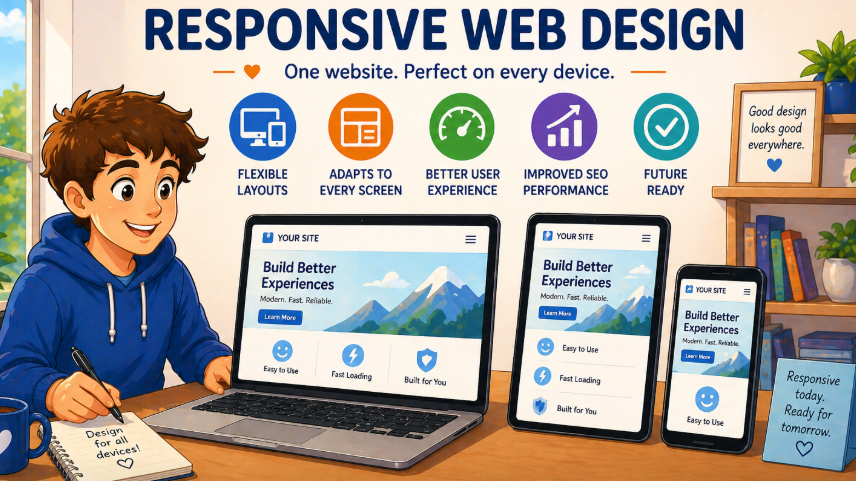

Responsive Web Design
Designing websites that adjust across phones, tablets, and desktop screens.
Image

Overview
Responsive web design lets websites to adjust to different screen sizes for different devices. Instead of creating one layout for desktop and another for mobile, responsive design uses flexible layouts, scalable images, and media queries to create a site that works for phones, tablets, and desktop screens.
Key Concepts
Flexible Layouts
Layouts adjust based on available screen space.
Media Queries
CSS rules change styles at specific screen widths.
Scalable Images
Images resize so they fit different devices without breaking layout.
Responsive Layout Example
Play with resizing your screen! This icon grid demonstrates how responsive web design allows content to adjust across different screen sizes. On smaller screens, the icons stack in one column. On larger screens, the layout expands into multiple columns. The homepage topic cards also demonstrate the responsive behavior.
What I Learned
I learned that responsive web designneeds planning for the layout, and content so users can navigate easily no matter what device they're on. Using CSS Grid and Flexbox helps make flexible layouts that adjust naturally. Setting maximum widths, minimum widths, and breakpoints make a big difference for usability. Responsive design helps UX and accessibility by making content adaptable for people.